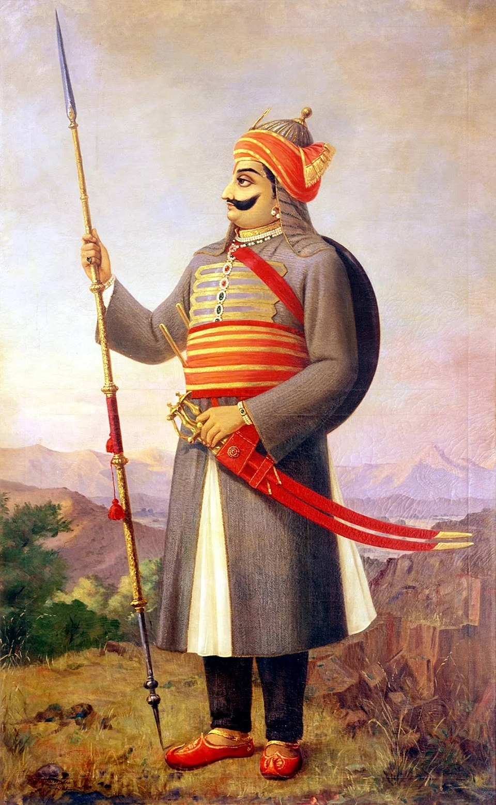

"अदम्य साहस, स्वाभिमान और राष्ट्रभक्ति के प्रतीक, वीर शिरोमणि महाराणा प्रताप को शत शत नमन!"
महाराणा प्रताप, मेवाड़ के वह सूर्य थे जिनकी आभा आज भी हर भारतीय के हृदय में वीरता और स्वाभिमान का संचार करती है। उनका जन्म 9 मई, 1540 (ज्येष्ठ शुक्ल तृतीया) को हुआ था। उन्होंने मुगल सम्राट अकबर की अधीनता स्वीकार न करके अपने राज्य और अपनी प्रजा की स्वतंत्रता के लिए आजीवन संघर्ष किया।
हल्दीघाटी का युद्ध (1576) उनके शौर्य, युद्ध कौशल और दृढ़ संकल्प का अद्वितीय प्रमाण है। विषम परिस्थितियों में भी उन्होंने हार नहीं मानी और अरावली की पहाड़ियों को अपना दुर्ग बनाकर मुगलों के विरुद्ध निरंतर संघर्ष जारी रखा। उनका घोड़ा 'चेतक' उनकी वीरता का अभिन्न साथी था, जिसकी स्वामीभक्ति की गाथाएं आज भी प्रेरित करती हैं।
महाराणा प्रताप का जीवन त्याग, तपस्या, और अटूट राष्ट्रप्रेम का प्रतीक है। उन्होंने अपनी मातृभूमि की रक्षा के लिए राजसी सुखों का त्याग कर दिया और अपने लोगों के बीच रहकर सादा जीवन व्यतीत किया। उनका संघर्ष केवल एक राज्य की स्वतंत्रता का नहीं, बल्कि भारतीय अस्मिता और स्वाभिमान की रक्षा का संघर्ष था।
आज, महाराणा प्रताप जयंती के इस पावन अवसर पर, हम उनके अदम्य साहस, उनकी दृढ़ता और उनके सर्वोच्च बलिदान को नमन करते हैं। उनका जीवन हमें यह सिखाता है कि परिस्थितियां कितनी भी कठिन क्यों न हों, हमें अपने सिद्धांतों और अपनी स्वतंत्रता के लिए सदैव अडिग रहना चाहिए। उनकी गाथाएं आने वाली पीढ़ियों को राष्ट्रसेवा और आत्मगौरव के लिए प्रेरित करती रहेंगी।